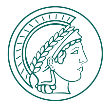
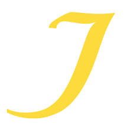
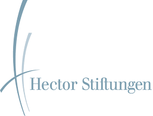
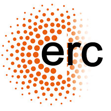

Cognitive Neurogenetics Lab
How does the world get into our heads? Our goal is to understand the interrelationship between our social environment and our brains. We study this question by treating the brain as fundamentally biosocial—an organ whose organization emerges from continuous interactions between genetic factors and social-environmental experience across the lifespan.
We investigate how brain regions enable interaction with our social world, how we change and adapt to our social environment, and how these insights translate to clinical practice and outreach. Our work integrates ultra-high-resolution neuroimaging, computational modeling, and global population neuroscience.
We Are Grateful to Our Funders

Max Planck Society
The Lise Meitner program supporting the core of our team in Leipzig
Helmholtz, FZJ
Supporting BigBrain/HIBALL collaboration and the core of our team in Jülich

Jacobs Foundation
Enabling us to investigate the impact of early life stress on brain development

Hector Foundation
Supporting our research in social cognition beyond the cortex

ERC Starting Grant
Supporting our work on the interplay between social cognition and social environment upon the brain